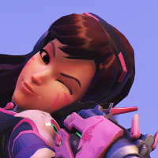

Mi super página
Volver
D.va
 D.Va is a fictional player character who appears in the 2016 video game Overwatch—a first-person shooter developed by Blizzard Entertainment—and related animations and literary media. She has also appeared as a character in Blizzard's crossover title Heroes of the Storm, and as a gameplay announcer in StarCraft II: Legacy of the Void. In the English media, she is voiced by Charlet Chung. In Overwatch lore, D.Va is a pro eSports gamer named Hana Song (송하나) from Busan, South Korea. Within the Overwatch narrative, she and other gamers were recruited by the Korean government's Mobile Exo-Force of the Korean Army (MEKA) to help quell the robotic Omnic uprising, translating their video game-playing skills over into controlling weaponized mech suits. Within the game, D.Va is a Tank character, able to deal a stream of damage and nullify incoming attacks for a short time. If D.Va's suit is destroyed, she can eject from it and stay alive long enough to call in a new suit. Her ultimate ability allows her to self-detonate her suit, dealing heavy damage to all enemies in line of sight, sufficient to eliminate most characters in one blow. D.Va has been well received by critics and players, and she has been seen as a positive female model for younger gamers.
D.Va is a fictional player character who appears in the 2016 video game Overwatch—a first-person shooter developed by Blizzard Entertainment—and related animations and literary media. She has also appeared as a character in Blizzard's crossover title Heroes of the Storm, and as a gameplay announcer in StarCraft II: Legacy of the Void. In the English media, she is voiced by Charlet Chung. In Overwatch lore, D.Va is a pro eSports gamer named Hana Song (송하나) from Busan, South Korea. Within the Overwatch narrative, she and other gamers were recruited by the Korean government's Mobile Exo-Force of the Korean Army (MEKA) to help quell the robotic Omnic uprising, translating their video game-playing skills over into controlling weaponized mech suits. Within the game, D.Va is a Tank character, able to deal a stream of damage and nullify incoming attacks for a short time. If D.Va's suit is destroyed, she can eject from it and stay alive long enough to call in a new suit. Her ultimate ability allows her to self-detonate her suit, dealing heavy damage to all enemies in line of sight, sufficient to eliminate most characters in one blow. D.Va has been well received by critics and players, and she has been seen as a positive female model for younger gamers.